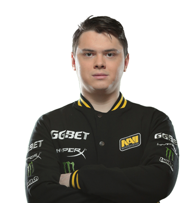

Денис Шарипов (род. 2 сентября 1998) — профессиональный российский киберспортсмен, также известный как «electronic». Один из лучших игроков мира в дисциплине Counter-Strike: Global Offensive[1]. Чемпион ESL One: Cologne 2018 и серебряный призер FACEIT Major: London 2018 в составе команды Natus Vincere[2]. Занимает 4 место в рейтинге игроков мира по версии портала HLTV.org[3] 2017-2018 годов.
Карьера Дениса началась в середине 2015 года, он начал играть в команде ACES вместе с Дмитрием «hooch» Богдановым. Позже он присоединялся к таким коллективам как Rebels, Team Empire, NokSuKao. Шарипов часто менял команды, пока организация Flipsid3 Tactics не взяла игрока на испытательный срок.
6 ноября 2017 года организация выкупает у команды Flipsid3 Tactics electronic`а в замен на аренду «seized» Дениса Костина[5]. В новом составе скилл Дениса возрастает[6]: он занимает 2 место на FACEIT Major: London 2018 и становится чемпионом BLAST Pro Series — Copenhagen 2018 и ESL One: Cologne 2018. Занял 4 место из 20 в рейтинге игроков мира 2018 года по версии портала HLTV.ORG[3].